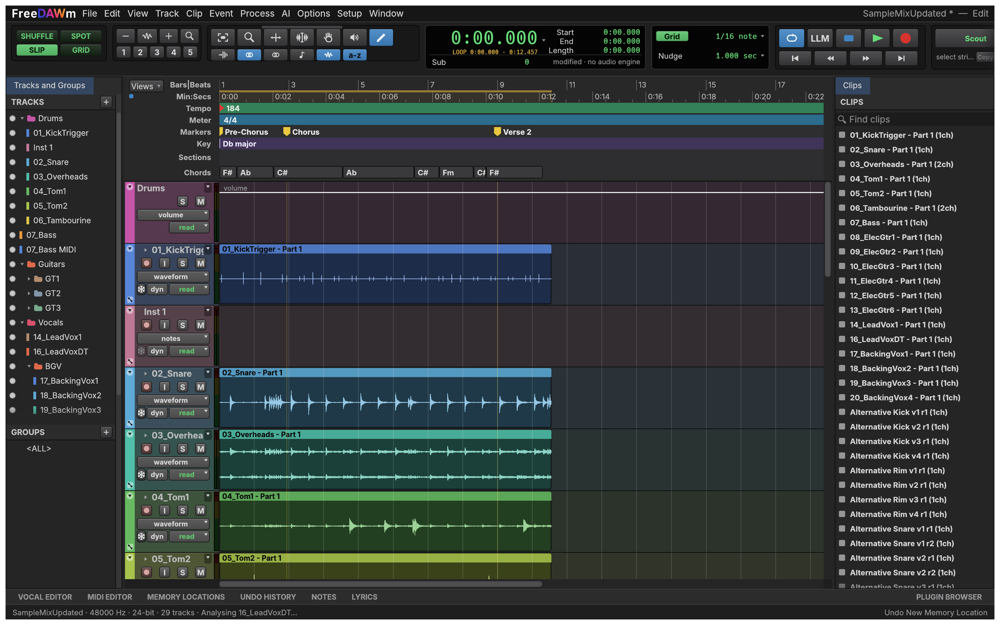
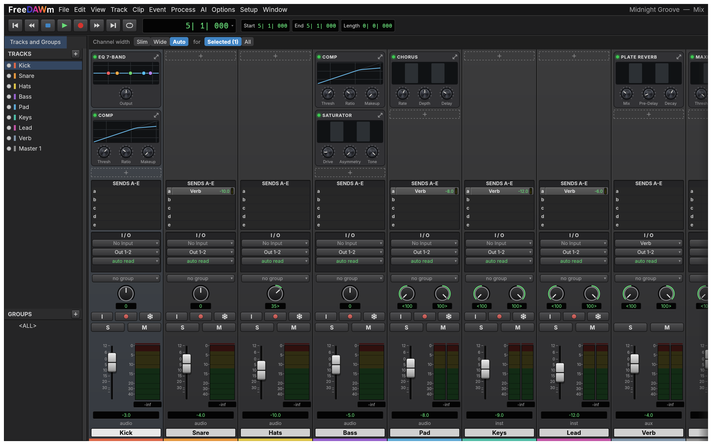
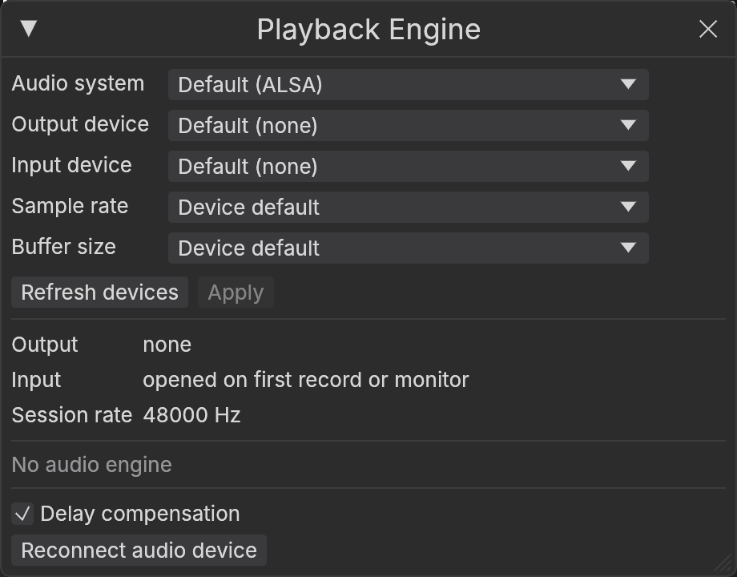
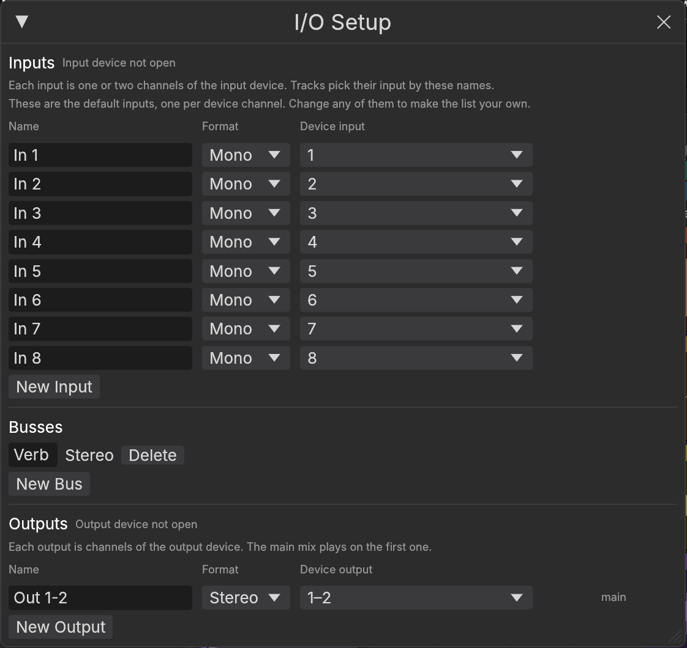
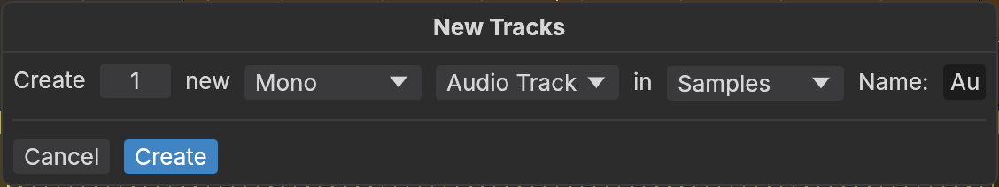
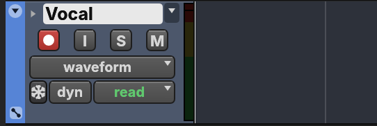
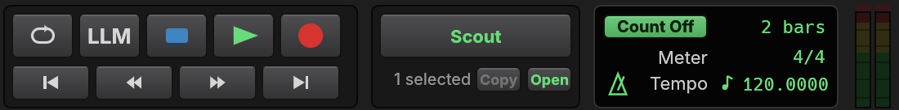

A free, open-source studio for recording, editing and mixing music, on the computer you already have.
FreeDAWm is a digital audio workstation. It runs on macOS, Windows, Linux and FreeBSD, and in a web browser.
You work in two main windows. The Edit window is the timeline, where you record, cut and arrange. The Mix window is the mixer, where you balance and shape the sound.
This guide is a binder of cheat sheets, not a manual to read from start to finish. Each page covers one idea, and most are a picture with labels.
Keep the page you need open beside FreeDAWm, or print it and pin it up.
The pictures show Midnight Groove, the demo song that comes with FreeDAWm, so your screen can match the page while you follow along.
The two windows you will spend your time in, the four ways clips can move, and the keys worth learning first.
Know what each part of the timeline window is for, so you can find a control without hunting. Open it with Window › Edit, or press Cmd = to flip between Edit and Mix.

Read a channel strip from top to bottom. Sound enters at the top of a strip and leaves at the fader, so the order on screen is the order the sound travels.

The list on the left is the same Tracks and Groups list as in the Edit window. The coloured bar under each name matches that track's clips on the timeline.
The edit mode decides where a clip lands when you move it. The tool decides what a click or drag does. Pick both before you edit.
Clips go exactly where you drop them. Gaps and overlaps are allowed. This is the mode FreeDAWm starts in.
Clips close up end to end. Cut a piece out and everything after it slides left to fill the gap.
FreeDAWm asks for an exact position, and the clip goes there. Use it when you know the time and not the place.
Clips and selections jump to the nearest grid line. Press F4 again for Relative Grid, which keeps a clip's offset from the line.
Left and right: does the clip stay where you put it, or does FreeDAWm line it up for you?
Up and down: do you place it by hand, or by a time on the ruler?
Press F6 and F7 together for three tools in one. Near a clip's edge it trims, in the upper half of a clip it selects, and in the lower half it grabs.
Learn these first. They cover most of a session, and each one saves a trip to the menus. On Windows, Linux and FreeBSD, press Ctrl wherever you see Cmd.
| Play or stop | Space |
| Record | F12 or Cmd Space |
| Play at half speed | Shift Space |
| Back to the start | Home |
| Go to the end | End |
| Add a marker | Enter |
| Loop playback on or off | Cmd Shift L |
| Play the selection | Alt [ |
| New track | Cmd Shift N |
| Record enable | Shift R |
| Solo | Shift S |
| Mute | Shift M |
| Input monitoring | Shift I |
| Group tracks | Cmd G |
| New session | Cmd N |
| Open a session | Cmd O |
| Save | Cmd S |
| Save as | Cmd Shift S |
| Import audio | Cmd Shift I |
| Bounce the mix to a file | Cmd Alt B |
| Undo | Cmd Z |
| Redo | Cmd Shift Z |
| Cut, copy, paste | Cmd X C V |
| Duplicate | Cmd D |
| Select all | Cmd A |
| Split at the selection | Cmd E |
| Heal a split | Cmd H |
| Trim to the selection | Cmd T |
| Create fades | Cmd F |
| Mute a clip | Cmd M |
| Clear the selection | Cmd B or Delete |
| Nudge later or earlier | + − |
| Zoom out or in | R T |
| Fit the whole session | Alt A |
| Zoom to the selection | Alt F |
| Zoom toggle | E |
| Jump to the next clip edge | Tab |
| Switch between Mix and Edit | Cmd = |
| Edit modes | F1 to F4 |
| Tools | F5 to F10 |
Change any shortcut in Setup › Keyboard Shortcuts. A few keys are fixed, including Space, Enter, Tab and the F keys.
Get sound into FreeDAWm: choose your audio device, make a track, record a take, and fix the part that went wrong without redoing the rest.
Tell FreeDAWm which device to play through and record from. You do this once per device, in Setup › Playback Engine.

ABCDEFGHYou hear yourself with almost no delay, but the computer works harder and may crackle. Best while recording.
Steady playback with lots of effects, but a delay you can hear when you play or sing. Best while mixing.
On the picture the input reads "opened on first record or monitor". FreeDAWm only opens your microphone when you arm a track or turn on monitoring.
Give your inputs names you will recognise, then make a track to record on. Named inputs save you from guessing which socket is which.

ABCDE
12345Track › New, or Cmd Shift N
| Audio Track | Records and plays sound: a voice, a guitar, a drum mic. |
| Instrument Track | Plays a software instrument from the notes you record or draw. |
| MIDI Track | Holds notes only, to drive an instrument somewhere else. |
| Aux Input | Has no clips. It takes sound from a bus, often for a shared reverb. |
| Master Fader | Controls the level of an output, usually the whole mix. |
Record your first take in six steps. The first three happen on the track, the last three on the transport.

123
456| Metronome | The icon beside Tempo turns the click on or off during the take. |
| LLM | Low Latency Monitoring. It bypasses the effects that add delay on the tracks you are recording. |
| Loop | Plays the selection round and round. See the next page for recording in a loop. |
| Tempo and Meter | Set these before you record to a click. Drag the tempo, or click it to type a number. |
Press Cmd Z to undo the take, then record again. FreeDAWm autosaves as you work and can recover a session after a crash.
Fix one line without redoing the song, record several tries in a row, and build one good take from the best parts of each.
Select the part you want to redo, then record. Only the selection is replaced. Everything around it stays.
No selection? Press Record while the song plays to drop in at that moment.
Turn on Options › Pre/Post-Roll, or press Cmd K. Playback starts a little before the punch so you can play along into it, and carries on a little after.
Turn on Options › Loop Record, or press Alt L. Select the bars to repeat and record. Each time round makes a new take, so you can keep trying without stopping.
Click the small arrow before the track name to show its take layers. Drag across the part of a take you like and it is copied up into the track, with a short crossfade at each join.